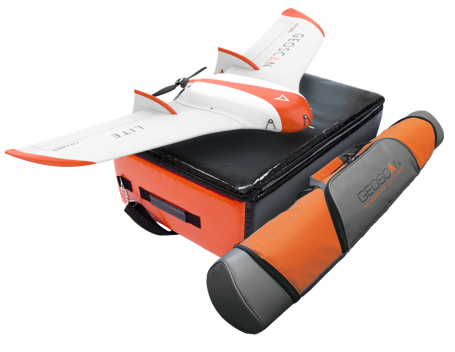

Общие сведения¶
Геоскан Lite – компактный беспилотный комплекс для аэрофотосъемки.
Назначение
Комплекс Геоскан Lite предназначен для получения геопривязанных фотографий объектов и автоматической площадной аэрофотосъемки.
Область применения
Полученные с использованием комплекса материалы могут использоваться для:
оценки состояния местности;
выполнения аэрофотосъемки местности с фиксацией моментов фотографирования для получения геопривязанных фотографий;
создания ортофотопланов и цифровых моделей местности по материалам аэрофотосъемки;
создания карт высот;
создания 3D-моделей местности;
вычисления объемов пород в карьерах и насыпных объектах.
Комплект поставки¶
Беспилотное воздушное судно (БВС) Геоскан Lite
Транспортировочная сумка БВС
Пусковая установка в транспортировочной сумке
Модернизированная фотокамера
Аккумуляторная батарея (АКБ) LiPo 14,8 В
Модем КРЛ с антенной
Зарядное устройство для АКБ
ПО для планирования полетного задания Geoscan Planner
Раскладная подставка для сборки планера
Комплект запасных частей:
киль - 2 шт;
штырь креплекия консолей крыла (460 мм);
комплект резиновых жгутов для катапульты;
лопасти воздушного винта 10x8;
ключ рожковый;
шомпол приемника воздушного давления;
приемник воздушного давления;
силиконовая трубка;
нож универсальный.
Технические характеристики¶
Тип БВС |
летающее крыло |
Скорость полета (воздушная) |
64 - 130 км/ч |
Максимальная взлетная масса |
3,1 кг |
Максимальная масса полезной нагрузки |
0,8 кг |
Площадь фотосъемки за один полет |
до 9 км² |
Допустимая скорость ветра |
до 12 м/с |
Размах крыла |
1,38 м |
Минимальная безопасная высота полета |
100 м |
Максимальная высота полета |
4000 м |
Двигатель |
электрический, бесколлекторный |
Аккумуляторная батарея |
LiPo 14,8 В |
Время подготовки к взлету |
10 мин |
Продолжительность полета |
до 60 мин |
Максимальная протяженность маршрута |
70 км |
Посадка |
на парашюте, в автоматическом режиме |
Рабочий диапазон температур: |
от -20 до +40 °С |
Обслуживание¶
После каждого полета осматривайте БВС на предмет повреждений.
В случае повреждения лопастей винта или килей вы можете заменить их самостоятельно, используя запасные части и инструменты из комплекта.
При выявлении конструкционных повреждений планера или систем необходимо обратиться в службу технической поддержки.
После выполнения 80 полетов рекомендуется отправить БВС на завод-изготовитель для проверки и технического обслуживания.
Хранение¶
Комплекс Геоскан Lite (без аккумуляторных батарей) и пусковую установку рекомендуется хранить в транспортировочных сумках в сухих помещениях при температуре от 5 до 25 °С и относительной влажности не более 80%, без конденсации. Срок хранения - 2 года.
Аккумуляторные батареи хранить в сухом прохладном месте, исключающем воздействие прямых солнечных лучей, при температуре от 5 до 25 °С и относительной влажности не более 80%, без конденсации. Оптимальная температура - от 5 до 10 °С. Оптимальный уровень напряжения АКБ при хранении: 15,4 В (подробнее см. Зарядое устройство и АКБ). Срок хранения - 1 год.